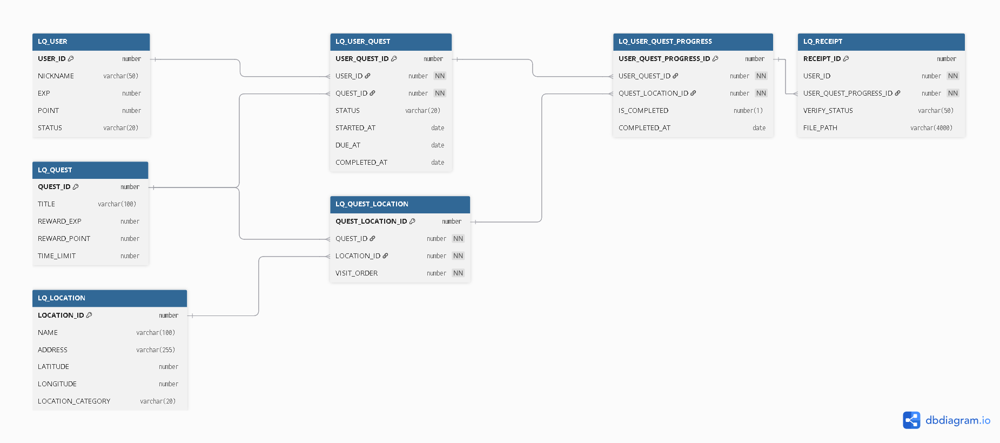

안세웅
React와 Spring을 함께 다루는 Java 풀스택 개발자입니다. 두 번의 팀 프로젝트에서 비즈니스 로직 설계부터 UI 구현까지 전 과정을 담당했습니다.
교육 및 자격증
보유 기술 스택
프로젝트 경험을 통해 습득한 보유 기술입니다.
Backend
Frontend
Database & Infra
프로젝트 소개
LocalQuest
지역을 게임처럼 탐험하는 미션 기반 O2O 로컬 발견 플랫폼
로컬 상권은 여전히 알려지지 않은 경우가 많고, 소비자는 가까운 지역을 탐험할 동기가 부족합니다. LocalQuest는 퀘스트·포인트·배지 시스템을 통해 지역 탐험을 게임처럼 만들어 O2O 연결을 자연스럽게 유도합니다.
프로젝트 시연 영상
전체 시스템 구조도
인프라, 서버, DB 구성
사용자 · 비즈니스 페이지
포트 3000
관리자 페이지
(JSP 서버 렌더링)
JSP 서버 렌더링
세션 기반 인증
JSON 응답
JWT 기반 인증
담당 범위 및 역할
-
비즈니스 페이지 Full StackFrontend 대시보드(HomeTab) · QR 스캔(QrTab) · 쿠폰 관리(CouponTab) · 파트너 센터 · 문의 페이지 — React SPA 전체 구현Backend BusinessAPIController · BusinessInquiryAPIController / Service · DAO 레이어 전담
-
관리자 페이지 Full StackFrontend JSP 기반 관리자 14개 페이지 — 사용자 · 퀘스트 · 리워드 · 비즈니스 · QR/위치 · 문의 · 공지 · FAQ 관리Backend 세션 기반 인증 · RoleBasedPageInterceptor 처리 포함
-
QR 기능 Full StackFrontend React QR Scanner(QrTab) — 스캔 UI 및 인증 흐름 연동Backend QR 코드 생성·검증 API 전체 — LocationQrService · LocationQrDAO 담당
핵심 도메인 설계
퀘스트 수행 흐름 중심 핵심 테이블 발췌 (전체 29개 테이블 중 7개)

- 퀘스트 ↔ 장소를 N:M 중간 테이블(QUEST_LOCATION)로 분리하고, VISIT_ORDER를 두어 순서 기반 장소 방문을 지원했습니다.
- 진행 단위를 USER_QUEST_PROGRESS로 세분화하여 장소별 완료 여부를 독립적으로 추적했습니다.
- 영수증 인증(RECEIPT)을 USER_QUEST_PROGRESS와 1:1로 연결해 인증 이력을 명확히 관리했습니다.
아키텍처 상세
admin-business.jsp · admin-reward-item.jsp · admin-qna.jsp 외
사용자/퀘스트/리워드/비즈니스/위치·QR/문의·공지·FAQ
/api/businesses/me · /api/businesses/me/coupons · /api/business-inquiries
LocationQrService (QR 생성·검증) · BusinessInquiryService (파트너 신청)
대표 기능 흐름
트러블슈팅 및 개선 포인트
QR 코드를 스캔해 검증 페이지(/qr/verify)로 이동했을 때
qrAuthKey 값을 읽지 못해 "유효한 QR 코드가 아닙니다" 오류가 발생.
새로 출력한 QR은 정상 동작하지만 이전에 인쇄해 둔 QR은 계속 실패.
초기 구현에서 buildQrVerifyUrl()이 ?qrAuthKey={uuid}로
URL을 생성했다가, 코드 간결화를 위해 ?key={uuid}로 파라미터 이름을 변경함.
QrVerify.js의 searchParams.get() 호출부는 그대로 두어
구 파라미터명을 읽지 못하는 불일치 발생.
QrVerify.js에서 두 파라미터를 모두 수용하도록
searchParams.get('key') || searchParams.get('qrAuthKey')
방어적 fallback 처리를 추가.
이후 파라미터 이름 변경 시 양쪽을 동시에 수정하도록 팀 컨벤션에 명시.
구 파라미터(qrAuthKey)로 생성된 기존 QR과
신 파라미터(key)로 생성된 QR 모두 정상 인증.
파라미터 불일치로 인한 인증 실패 0건.
비즈니스 대시보드의 QR 탭을 반복해서 진입·이탈하면 브라우저 메모리 사용량이 점진적으로 증가. 장시간 사용 시 탭이 느려지는 현상 발생.
API에서 받은 QR 이미지 Blob을 URL.createObjectURL(blob)으로
변환해 <img> src에 바인딩하는 방식.
createObjectURL()로 생성된 URL은 명시적으로
revokeObjectURL()을 호출하기 전까지 브라우저 메모리에 유지됨.
초기 구현에서 useEffect cleanup이 없어 unmount 시 해제되지 않음.
useRef(qrObjectUrlRef)로 현재 활성 Blob URL을 추적하고,
useEffect의 cleanup 함수(return 블록)에서
URL.revokeObjectURL(qrObjectUrlRef.current)를 호출해 명시적으로 해제.
새 이미지 로드 시에도 이전 URL을 먼저 revoke한 뒤 새 URL을 저장.
페이지 이탈 시 Blob URL이 즉시 해제되어 반복 진입·이탈 후에도 메모리 사용량이 일정하게 유지. 브라우저 DevTools Memory 탭에서 누수 패턴 소멸 확인.
회고 및 배운 점
기술적 성장
QR 코드 생성·검증 API를 설계·구현하며 도메인 로직과 인프라 코드를 분리하는 감각을 길렀습니다. Blob URL 메모리 누수 트러블슈팅을 통해 브라우저 리소스 생명 주기와 React useEffect cleanup 패턴을 체득했고, 인터셉터 범위 밖 인증 공백을 직접 발견하면서 보안 관점으로 코드를 바라보는 습관이 생겼습니다.
협업 경험
5인 팀 리더로 역할 분담과 일정을 조율했습니다. API 파라미터 명 불일치 버그를 직접 겪은 후 팀 컨벤션을 문서화하면서, 프론트·백을 동시에 담당하는 풀스택 포지션에서 인터페이스 계약을 먼저 정의하는 API-first 접근의 가치를 실감했습니다.
다음 목표
LocalQuest를 통해 설계 결정 하나가 인증 흐름 전체에 영향을 미친다는 것을 직접 체감했습니다. 이 경험을 발판 삼아 현재 Python과 데이터 분석을 학습하며, 스마트 팩토리 도메인에서 제조 데이터를 다루는 프로젝트에 도전하는 것이 다음 목표입니다.